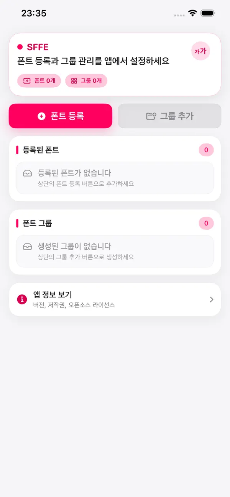

원하는 폰트 적용
TTF, OTF, WOFF, WOFF2를 등록하고 웹페이지에 바로 적용할 수 있습니다.
Safari Font Experience
SFFE는 Safari에서 보는 웹페이지의 폰트를 사이트와 언어에 맞춰 더 읽기 좋게 바꿔주는 iOS 확장 앱입니다.

Why SFFE
TTF, OTF, WOFF, WOFF2를 등록하고 웹페이지에 바로 적용할 수 있습니다.
사이트마다 다른 폰트 그룹을 지정해 컨텐츠 성격에 맞게 읽을 수 있습니다.
한국어, 영어, 일본어, 중국어(간체/번체) 폰트를 분리 적용할 수 있습니다.
숫자·특수문자, 내 언어, 다국어 문단을 한 번에 비교해 빠르게 결정하세요.
민감한 개인 데이터를 수집하지 않는 방향으로 설계되었습니다.
한 번 구성해 두면 Safari에서 퍼즐 아이콘으로 즉시 전환할 수 있습니다.
How It Works
앱에서 TTF/OTF/WOFF/WOFF2 폰트를 추가합니다.
기본 폰트와 언어별 폰트를 묶어 폰트 그룹을 만듭니다.
Safari 퍼즐 아이콘에서 사이트별 그룹을 선택해 즉시 반영합니다.
FAQ
웹 환경에서는 WOFF/WOFF2가 일반적으로 더 가볍고 빠릅니다. 큰 폰트 파일은 첫 로딩에 시간이 걸릴 수 있습니다.
iOS 설정 > Safari > 확장 프로그램에서 SFFE를 켠 뒤, Safari에서 퍼즐 아이콘으로 실행할 수 있습니다.